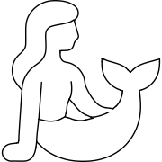
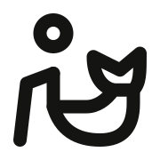
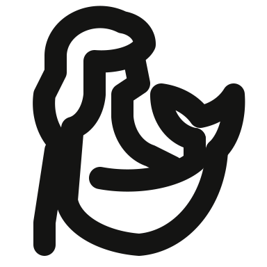
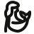

One full automatic pass; 19 drawing-bound visual exceptions authorized by the user. Automatic findings are retained in every result. Production completion is recorded in REPORT.md after all uploads finish.
1. solo/seated-mermaid-with-raised-tail

Original

Rejected

Revision

Native 48px · light/dark
Problem: A generic stick head and bucket-like tail lost the long hair, human torso and raised split fin.
Revision: Restore long flowing hair, a seated torso, supporting arm and a sweeping fish tail ending in two fin lobes.
Validation: Pass by visual exception; automatic fail.
Exception: Retain continuous long hair, profile anatomy, the supporting arm and raised split fin. Their anatomical contacts and close hair opening preserve the mermaid identity; the natural outline slightly departs from the rectangular keyshape.
Problem: The legs spread backward and forward like a runner, and the raised arm did not read as seated.
Revision: Put both bent legs in front of a rounded seated hip and extend a relaxed arm over the knees.
Validation: Pass by visual exception; automatic fail.
Exception: Retain two forward bent legs and the rounded seated hip. The natural asymmetric footprint is narrower than the keyshape and the near legs have a short compact gap. Exact head/upper-torso gap is 4 ink units: 22-(9+5)-4=4.
Problem: A triangular crossbar replaced praying hands and the crossed legs became a disconnected V.
Revision: Show hands joined upright at the chest, bent elbows and a closed crossed-leg seat.
Validation: Pass by visual exception; automatic fail.
Exception: Retain upright joined hands, bent elbows and crossed seated legs. The compact overlapping leg contours and open shoulder/prayer arrangement remain legible at 48px; this is an outlined seated figure, with a deliberate neck opening rather than a certified stick-figure gap.
Problem: The squared torso read as a letter E, and the tiny broken bench did not support the bather.
Revision: Use a relaxed seated pose on a continuous bench and three rising steam strokes.
Validation: Pass by visual exception; automatic fail.
Exception: Keep the connected seated body/bench and three separate steam strokes. Intentional seat contact and closer steam spacing preserve the sauna scene. Exact head/upper-torso gap is 4 ink units: 24-(11+5)-4=4.
Problem: A single straight connector between two stick figures looked like pushing rather than shoulder massage.
Revision: Place a taller therapist behind the seated recipient, with two bent arms reaching the upper shoulders.
Validation: Pass by visual exception; automatic fail.
Exception: Keep two therapist arms reaching the recipient and a compact seat. Local arm proximity and hand-to-shoulder contact are necessary to communicate massage. Both head/upper-torso gaps are exactly 4 ink units: 20-(8+4)-4=4 and 28-(16+4)-4=4.
Problem: The lower outline looked like trousers and the head had no recognizable teddy muzzle.
Revision: Separate two round seated paws, add rounded arms and a small central nose under the domed bear head.
Validation: Pass by visual exception; automatic fail.
Exception: Keep round ears, a central nose and distinct seated oval paws. Short ear/head and arm/paw intersections describe one plush animal; the small ear openings and natural outline are visually readable at 48px.
Problem: The short stepped stem did not preserve the long horizontal key shaft and repeated lower teeth.
Revision: Restore the round bow, enclosed keyhole, long shaft, pointed tip and two bottom notches.
Validation: Pass by visual exception; automatic fail.
Exception: Accept only the natural horizontal key footprint instead of stretching the round bow to the keyshape. The round keyhole, outlined shaft and two notches remain clear; model clearance checks pass.
Problem: The skewed top-hat shape and M-shaped torso lost the peaked security cap and uniform.
Revision: Restore a broad peaked cap, circular jaw, open uniform collar and one lowered arm.
Validation: Pass by visual exception; automatic fail.
Exception: Retain the narrow peaked-cap crown, circular jaw and V-neck uniform. Attached cap/jaw parts and compact crown spacing are essential role cues; the natural bust envelope differs slightly from the keyshape.
Problem: A thick rectangular block looked like a sign; the officer lacked a peaked cap and uniform collar.
Revision: Restore an open passport booklet, an extended bent arm, peaked cap and uniform neckline.
Validation: Pass by visual exception; automatic fail.
Exception: Preserve the two booklet covers, bent presenting arm and peaked uniform cap. The compact booklet, cap and uniform neck opening remain readable at 48px; these identity-bearing details require closer local spacing.
Problem: The bag looked like a tall bottle and the officer torso collapsed to an M.
Revision: Make a wide handled luggage case beside a uniformed officer with a peaked cap and connected carrying arm.
Validation: Pass by visual exception; automatic fail.
Exception: Keep a squat luggage case with its handle and a peaked uniform cap. Compact handle/crown openings and the natural bust/prop footprint preserve the reference meaning at native size.
Problem: The person was reduced to two disconnected bars beside an oversized magnifier.
Revision: Restore a recognizable head-and-shoulders portrait and a magnifying lens in the foreground.
Validation: Pass by visual exception; automatic fail.
Exception: Keep a full head-and-shoulder portrait behind a separate foreground magnifying glass. The interrupted shoulder leaves a deliberate visible gap at the lens; its closer object spacing and natural bounds are accepted.
Problem: The beak and eye were missing, and a blunt tail turned the bird into an abstract leaf.
Revision: Restore the left-facing pointed beak, small eye, rounded breast, swept wing and tapered tail with two legs.
Validation: Pass by visual exception; automatic fail.
Exception: Preserve the small left-pointing beak, eye, tapered tail and two legs. Short beak and leg/body contacts and closer eye spacing are normal avian details; no decorative feather marks crowd the body.
Problem: The rigid figure and straight base looked like a person beside a sail, with no wave or bent surfing stance.
Revision: Show a wind-filled sail, hand gripping the boom, bent surfing legs, an angled board and a low wave.
Validation: Pass by visual exception; automatic fail.
Exception: Keep sail, gripping hand, bent surfing stance, board and a detached wave. The stance opening and mast attachments are small but clear, and the two lower strokes remain visibly separated at 48px. Exact head/upper-torso gap is 4 ink units: 24-(12+4)-4=4.
Problem: The arrow tail merged into the legs and the body lost the dress; the wings looked like drooping arms.
Revision: Restore two horns, detached bat wings, a flared dress and an independent curved arrow tail.
Validation: Pass by visual exception; automatic fail.
Exception: Retain two horns, separate bat wings, flared dress, two legs and an independent arrow tail. Local wing and tail proximity is needed for the complete fantasy silhouette. Head-to-dress-top ink gap is 4: 23-(10+5)-4=4.
Problem: A stick person with a horizontal wing box lost the woman’s profile, hair, bird body, feathered wings and talons.
Revision: Restore a profile head with flowing hair, feathered spread wings, tapered bird body and clawed feet.
Validation: Pass by visual exception; automatic fail.
Exception: Preserve a continuous human profile and long hair, feather-shaped spread wings, tapered bird body and talons. Narrow hair/wing openings and close anatomical joins preserve the harpy identity at 48px.
Problem: Oversized curled shapes replaced feather wings and the tiny body looked like an insect.
Revision: Restore a full-height human body with separate arms and legs and compact scalloped wings attached behind the shoulders.
Validation: Pass by visual exception; automatic fail.
Exception: Preserve a full-length person and compact scalloped wings behind the shoulders. The two trouser openings have 3-unit ink gaps and the natural spread-wing footprint exceeds the square inset slightly. Head/body ink gap is exactly 4: 22-(9+5)-4=4.
Problem: The coiled lines lacked a readable dragon head and bat wing, becoming an abstract loop.
Revision: Restore a left-facing long-snouted serpent with curved belly, a large pointed bat wing and a tapering tail.
Validation: Pass by visual exception; automatic fail.
Exception: Preserve the long snout, narrow serpentine body and large bat wing. The neck strip is intentionally narrow and the asymmetric outline keeps its natural proportions instead of being stretched into the square keyshape.
Problem: An open U-shaped device and one arc looked like a purse; the closed phone and second wireless wave were absent.
Revision: Restore a closed rounded phone, two separated wireless arcs and a legible yuan symbol; omit the crowded bottom divider.
Validation: Pass by visual exception; automatic fail.
Exception: Keep the closed phone, two distinct wireless arcs and readable yuan glyph. Local arc/device and glyph spacing is tighter than the solo guide but visibly separated at 48px. The bottom divider was removed to avoid a crowded small opening.
Problem: The bubble tail was nearly absent and two tiny dots replaced the message lines.
Revision: Restore a distinct lower-right speech tail, two horizontal text strokes, and an open yuan/yen glyph.
Validation: Pass by visual exception; automatic fail.
Exception: Preserve a large visible speech tail, currency glyph and two distinct message strokes. The 3-unit local ink clearances and natural tail footprint retain the complete composition and remain clear in both themes.